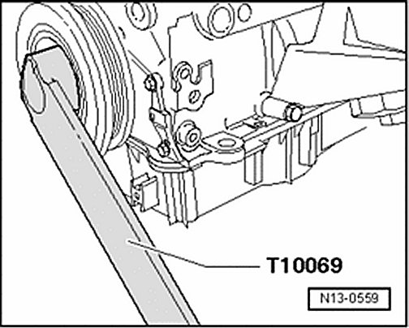
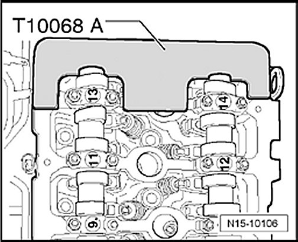
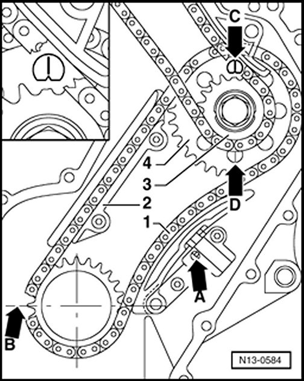
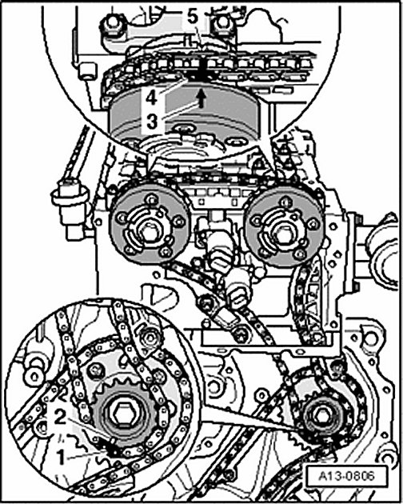

Timing Component Alignment Marks: Locations
Please see Timing Chain / Service and Repair for complete procedures to set/adjust the camshaft, intermediate shaft and Crankshaft timing alignment. Intermediate Driveshaft and Camshaft Drive Timing Chains, Installing

- Lock vibration damper using counter-holder tool T10069 .

NOTE: Special tool T10068 is required to time camshafts.

- The tab on the intermediate shaft timing chain sprocket must align with marking - arrow C - behind it.

- Check the position of the copper color chain links to the adjustment markings.